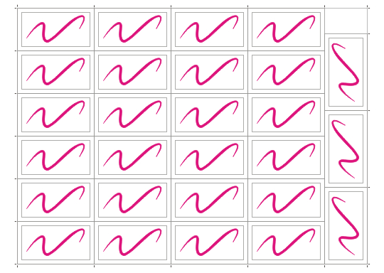

27 визиток на SR A3 за считанные секунды.
Эта заметка адресована тем, кто печатает много визиток на лазерных принтерах типа Xerox с использованием формата SR A3. Принтеры такого типа довольно широко используются в небольших предприятиях оперативной полиграфии.
Визитки – такой товар, который обычно заказывают небольшими тиражами, чаще всего по 100 шт.
Если сделать раскладку визиток размером 90 х 50 мм (без цветного фона или с однородным цветным фоном) на листе формата SR A3 (450 х 320 мм) обычным способом, т.е. с использованием стандартных средств макетирования в окне «Предварительный просмотр», то можно разместить на листе блок из 24 визиток (4 х 6). На четырёх листах мы получим 96 штук. И что же, из-за недостающих четырёх штук тратить ещё целый лист?
Если повернуть визитку на 90 град., то рядом с блоком из 24 шт. можно пристроить ещё 3 визитки. Таким образом на листе уже помещается 27 шт., и требуемый тираж в 100 шт. уже можно напечатать на 4 листах. Правда, при этом уже нельзя использовать стандартные средства макетирования с автоматической расстановкой меток реза.
Я уже давно пользуюсь таким способом, который позволяет и бумагу сэкономить и получить раскладку в считанные секунды.
Суть его в том, что раскладка создаётся не на чистом листе, а на заранее созданном шаблоне, на котором собственно располагаются габаритный прямоугольник размером 410 х 300 мм и метки реза. Абрис прямоугольника без цвета. Его назначение в том, чтобы точно позиционировать первую визитку с помощью окна «Выровнять и распределить». Затем надо сделать раскладку вручную, создавая необходимые дубли с помощью окна «Преобразование». Затем необходимо нарисовать метки реза в отдельном слое, который сделать потом нередактируемым. Удалите визитки. Шаблон сохраните.
Шаблон раскладки может также содержать и заготовку будущей визитки (прямоугольник соответствующий обрезному формату 90 х 50 и концентричный ему прямоуголик поменьше, обозначающий поля. После создания визитки обоим прямоугольникам задают абрис без цвета.
После того, как визитка готова и утверждена делается раскладка с помощью заранее записанного макроса. На запуск макроса уходят считанные секунды, а саму раскладку макрос делает за секунду.
Если Вы ещё не не имели дела с макросами, то попробуйте записать макрос самостоятельно.
Выбирете: Инструменты – Макросы – Начать запись.
В открывшемся окне «Сохранить макрос» выбирете GlobalMacros.
Аккуратно выполните все действия по созданию раскладки, используя окна «Выровнять и распределить» и «Преобразование» (Alt + F7).
Остановите запись макроса.

При запуске макроса следите, чтобы был активным слой, в котором находятся визитка и габаритный прямоугольник.
Специально для CDRPRO.RU.

shark,
До чего же Вы любитель спорить! Предлагаете то, чего сами не пробовали.
Клонированные объекты повторяют далеко не все свойства прообраза.
Например, не повторяют перемещение текста; не повторяют добавление нового объекта; а сгруппированный объект, который был клонирован, вообще не поддаётся разгруппировке.
Я, наверное, действительно любитель спорить, но у меня в CorelDRAW X3 объекты, определенные в виде копий символа, клонированные, отзеркаленные, отмасштабированные - полностью повторяют все свойства оригинала, поскольку сами объекты представляются не набором кривых, а ссылкой на источник. Таким образом изменение оригинала ведет к изменению всех объектов-клонов. Я достаточно часто печатаю на работе визитки, и упомянутая мной схема здорово сокращает время подготовки к печати. Исходный объект-прообраз можно как угодно изменять, добавлять новые объекты, группы, текст, растровые изображения и все это появится во всех копиях прообраза сразу после выхода из режима редактирования символа. Единственное ограничение - нельзя пользоваться прозрачностью...
shark,
Во истину верна поговорка:"Век живи - век учись".
Не знал, что символ может сохраняться в отдельном файле (раньше полагал, что символ сохраняется только в библиотеке символов).
Попробовал Ваш способ.
Он настолько хорош, что кажется, в нём нет недостатков.
Но было бы лучше, если бы Вы сами открыто показали бы не только достоинства, но и недостатки (я не имею в виду прозрачность).
Использование символов - это замечательно! В том числе и в случае с раскладкой визиток...Но лишь до той поры, пока визитка незатейлива, а заказчик непритязателен.
Зачастую процесс создания визиток проходит поэтапно: сначала рисуют несколько вариантов, из которых заказчик выбирает один за основу, а потом дорабатываются детали. То есть Вы рисуете варианты на чистом листе, а затем выбранный заказчиком вариант копируете, вставляете в шаблон с метками и создаёте раскладку.
А раскладка из символов немного похожа на ситуацию, когда вагоны вперёд паровоза летят.
Попробуйте этот макрос! http://cdrpro.ru/forum/13-357-1
Всех недостатков, кроме отсутствия эффектов прозрачности, я пока еще не знаю. Из плюсов могу добавить поддержку символ-в символе, т.е. например, рамка определена одним символом, макет - символом, содержащим эту рамку. Кстати, использование символов сокращает размер файлов, содержащих одинаковые повторяющиеся объекты, поскольку, как я уже упоминал выше, сохраняется не информация об объекте (число узлов, заливка, обводка и т.п.), а всего лишь ссылка на определенный в виде символа объект и информация о примененных к копии объекта трансформациях и координаты. PowerClip также работает. А объекты с прозрачностью перед "символизацией" лучше "забитмапить". Определять символы удобно с помощью докера Symbol Manager, который можно расположить внизу справа под Object Manager'ом и просто перетягивать туда определяемые объекты. Последняя кнопка в этом докере Purge Unused Definitions, удаляет из документа неиспользуемые символы.
Отказываюсь от всяких сомнений насчёт недостатков способа с использованием символов.
В этом способе также нужен шаблон с метками реза и с раскладкой из символов, где роль символа может играть просто прямоугольник с размерами 90 х 50.
Для того, чтобы заменить символ на визитку, по сути не требуется какое-то редактирование символа.
Просто надо:
- выделить символ правой кнопкой мыши;
- в открывшемся меню выбрать: Изменить символ;
- символ удалить;
- вставить из буфера обмена скопированную визитку;
- кликнуть визитку правой кнопкой мыши;
- выбрать: Завершить изменение символа.
Специально хронометрировал. Получается не быстрее, чем с использованием макроса. Но всё-равно, довольно удобно.
вмсто двух кликов мышков (правой кнопкой и выбора меню "изменить символ" достаточно один раз с зажатым CTRL'ом кликнуть на символ. Такие же действия для выхода из режима изменения символа (кликнуть надо на пустое поле)
Solowejka почитайте мой самый первый пост по данной теме. Вы просто еще раз повторили описаную мной последовательность действий :)
Так как русский язик мне не родной, то буду писать через <a href=http://translit.ru/>транслит.ру</a> и с множеством граматических ошибок. :) Заранее извините. :Р
Никто не упоминул маленький нюанс - в предлагаемой раскладке у трех визиток с правой сторони будет другое направление волокна бумаги. И если бумага около 300 г/м2, то пропуская через принтер и довольно высокую температуру печки принтера она изгибается. После порезки это сразу бросаетса в глаза. Надеюсь, никто визитки не делает на стограмовой бумаге. :)
Я сначала сделаю макет (если нет готового), потом смотрю на какой бумаге, какой размер листа, как идёт волокно - вдоль или впоперек, и только тогда рассчитиваю самий економний вариант порезки листа и печати визиток. И, кстати, резать удобнее не 4 - 5 листа А3, а 8 - 10 А4.
А про Symbol Manager - знал, но не пробовал. Посмотрю что и как. Спс.
SVILPE,
Когда распиливают бревно на доски, то после их высыхания часто можно наблюдать их коробление, вызванное неоднородностью структуры. Прелесть бумаги, наряду с другими искусственными материалами (хоть и изготавливаемыми из натуральных) как раз втом, что она обладает большей изотропностью свойств.
У нас бумага 300 г/м.кв. после печки не изгибается, а выходит идеально плоский лист.
Формат А4 здесь вообще не при чём. Выше уже говорилось, что для создания раскладки на нём можно обойтись только окном настройки Преобразования, либо применить стандартные средства макетирования (создание виртуальной раскладки) в окне Предварительный просмотр настроек печати.
Я просто деликатно намекнул на то, что нельзя/не принято клиенту отдавать визитки на одной бумаге, но с разними направлениями волокна. ^^
Хорошо если принтер негнёт бумагу, экономия тоже штука замечательная, но различие упругости визитки вдоль и поперек сразу заметна.
А про А4 упоменул с точки зрения резчика, нежели хотел опровергнуть простоту предложенной сборки визиток на печать.
Solowejka
Про бумагу и изотропию. Все цитыровать небуду, ибо многовато:
Страницы